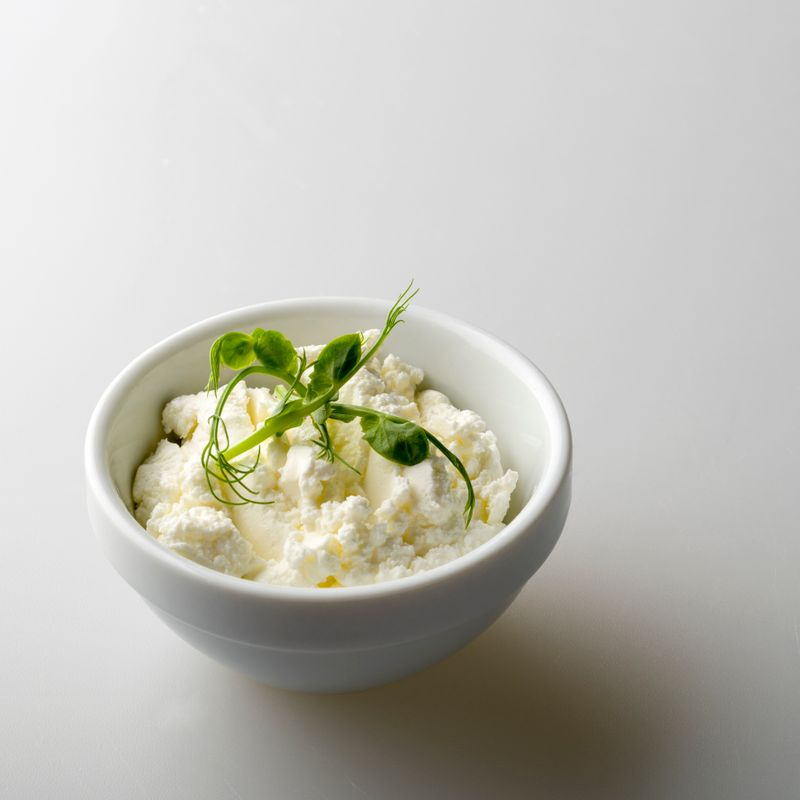

There is a moment, just before the milking shed wakes up, when the whole farm seems to be holding its breath. The grass is wet. The gate is cold. The first pail is always the quiet one.
People often ask why the milk we collect before sunrise tastes different from milk collected later in the day. They expect a romantic answer. The real answer is more useful: it is a chain of small, physical decisions, repeated every single morning.
It begins with the grass
Our Gir cows graze in the late afternoon and again before dawn. Overnight, the pasture holds moisture and the animals move slowly. That slow movement, combined with a diet of native grasses and a little dry fodder, produces milk that is richer and more aromatic than a rushed morning would.
Kannan, who has been with the Anaikatti farm for eight years, can tell the difference by the colour of the cream before it has even settled. “If the evening was too hot, the milk tells you,” he says. “You have to listen.”

Temperature is the whole story
Milk is a living ingredient for a very short time. We chill it to four degrees within minutes of collection, then keep it there through the wash, the bottle fill and the route. That cold chain is not a marketing detail. It is the difference between a clean, sweet flavour and the flat “fridge taste” most people have learned to accept.
A small thing you can check: open a bottle and smell it before you pour. Fresh milk should smell of cream and pasture, not of the inside of a fridge.
The quiet hours are the shortcut
The roads at 4:30 AM are empty. Our riders can take the shorter farm road instead of the highway, which means less vibration, fewer stops and a shorter gap between the barn and your doorstep. By the time the city begins to stir, most of the route is already finished.
There is no magic in this. It is simply what happens when you let the day begin at the pace of the animals rather than the pace of a schedule.

A slower morning, by design
We don't believe milk should taste the same every day of the year. The pasture changes, the weather changes and the herd changes. What stays the same is the care and the cold chain. The rest is the honest flavour of a particular morning.
If you have a bottle from this week, pour a little into a glass before you add anything to it. Notice how it smells, how it coats the glass, how quickly the cream rises. You are tasting a morning that began before you woke up.

I opened the bottle before pouring this morning. You are right — it smelled like the field, not the fridge. Small thing, but it changed my whole breakfast.
Would love a story about the wash and bottle return loop. That feels like the part nobody sees.
The cardamom milk recipe is exactly what my mother used to make. I made it with the A2 bottle and it was perfect.